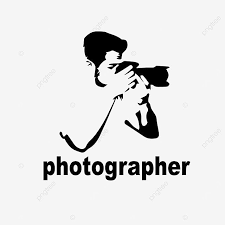
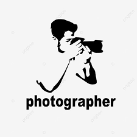

Web Development & Data Analyst.
About Me!
Halo! Nama saya Walid Fernando Sastriana. Saat ini saya adalah seorang mahasiswa yang sedang mengejar gelar Sarjana Ilmu Komputer di Universitas Bina Nusantara. Ketertarikan saya pada teknologi komputer sejak kecil membawa saya pada perjalanan menarik menuju dunia pengetahuan. Saya mengambil setiap kesempatan yang saya bisa untuk mempelajari lebih dalam aspek-aspek menarik di bidang ini dan mengembangkan lebih lanjut keterampilan dan pemahaman saya. Kami juga aktif terlibat dalam berbagai kegiatan ekstrakurikuler seperti organisasi Rohani Islami.
Dalam proses pendidikan, saya selalu berusaha memecahkan masalah yang kompleks dengan bekerja sama dengan teman sekelas dan guru. Saya percaya kerja tim adalah kunci kesuksesan dan saya suka bertukar ide, belajar dari orang lain, dan membangun hal-hal hebat bersama. Selain akademisi, saya juga mempunyai minat lain seperti fotografi. Saya percaya bahwa hobi juga berperan penting dalam pengembangan diri dan kreativitas.
Portofolio ini saya buat untuk berbagi pengalaman, proyek, dan pencapaian yang telah saya capai selama pendidikan. Jika Anda ingin berdiskusi lebih lanjut atau bertukar pikiran, jangan ragu untuk menghubungi kami kapan saja. Mari jelajahi dunia pengetahuan dan ciptakan perubahan positif bersama-sama! Terima Kasih.
Salam Hormat, Walid.
My Education


My Skill


 

My Experiences
- International Conference (Presentation and Publishing Paper) ICOCSETI 2025
-

- Paper Title : “Meta-Classifier Approach to Facial Expression Recognition Using DWT-Based Feature Extraction”
- Author
- Januari 2025
-
- Melakukan penelitian dan eksperimen tentang Facial Expression Recognition menggunakan model machine learning dengan fitur ekstrasi DWT menggunakan model SVM, KNN, dan Decision Tree.
- Menulis paper IEEE dan mempublikasikan paper penelitian di Konferensi Internasional ICOCSETI 2025.
- International Conference (Presentation and Publishing Paper) BTS-I2C 2024
-

- Paper Title : "Late Fusion Approach for Facial Expression Recognition Using HOG, LBP, and DWT Features with SVM"
- Author
- Desember 2024
-
- Melakukan penelitian dan eksperimen tentang Facial Expression Recognition menggunakan model machine learning.
- Menulis dan mempublikasikan paper penelitian di Konferensi Internasional BTS-I2C.
- Certified Internship
-
- Bina Nusantara University - School of Computer Science
- Application Development
- September 2024 - Februari 2025
-
- Bekerja dalam proyek bersama departemen School of Computer Science.
- Enrichment Programs Certified Specific Independent Study (Research Assistant)
-
- Bina Nusantara University - School of Computer Science
- Paper Title: "Identifying Regional Patterns of Malnutrition: A Clustering Analysis of Stunting in Indonesian Infants"
- Februari 2024 - Juli 2024
-
- Melakukan studi independen untuk menganalisis pola regional gizi buruk pada bayi Indonesia menggunakan teknik pengelompokan untuk memberikan informasi intervensi gizi yang lebih tepat sasaran.
- Uji Sertifikasi Kompetensi
-

- Badan Nasional Sertifikasi Profesi
- Bidang: Administrasi Perkantoran
- Kompetensi: Pengelola Administrasi Perkantoran
- September 2022
-
- Menjalani pelatihan dan pengujian yang diselenggarakan oleh panitia sertifikasi.
- Certified Internship
-

- PT. Garuda Maintenance Facility Aeroasia Tbk.
- Junior Aircraft Technician
- Januari 2020 - Maret 2020
-
Bekerja sebagai Junior Aircraft Technician di Line Maintenance Services, spesialisasi pada Airbus A330-200/300/900Neo dan Boeing 777-400/737-Max. Tanggung jawab saya termasuk:
- Pemeliharaan dan Inspeksi: Melakukan pemeriksaan rutin untuk memastikan pesawat dalam kondisi optimal.
- Perbaikan Teknis: Mengidentifikasi dan memperbaiki masalah teknis, termasuk avionik, sistem hidrolik, dan mesin.
- Kepatuhan terhadap Regulasi: Memastikan semua prosedur pemeliharaan mematuhi standar keselamatan penerbangan internasional dan peraturan yang berlaku.
Partners
Projects Done
Experiences
Meetings
My Projects
- Research and Publication (ICoCSETI 2025 Conference)
-
- Binus University
- Project Title: "Meta-Classifier Approach to Facial Expression Recognition Using DWT-Based Feature Extraction"
- Desember 2024 - Januari 2025
-
- Melakukan eksperimen tentang Facial Expression Recognition dengan menggunakan dataset CK+48.
- Melakukan analisis data menggunakan metode dan model dari Machine Learning untuk mencari hasil akurasi dari eksperimen tersebut.
- Melakukan pembuatan paper dari hasil eksperimen yang sudah dilakukan dan mempublish ke ICOCSETI Conference.
- Research and Publication (BTS-I2C 2024 Conference)
-
- Binus University
- Project Title: "Late Fusion Approach for Facial Expression Recognition Using HOG, LBP, and DWT Features with SVM"
- October 2024 - December 2024
-
- Melakukan eksperimen tentang Facial Expression Recognition dengan menggunakan dataset CK+48.
- Melakukan analisis data menggunakan metode dan model dari Machine Learning untuk mencari hasil akurasi dari eksperimen tersebut.
- Melakukan pembuatan paper dari hasil eksperimen yang sudah dilakukan dan mempublish ke BTS-I2C Conference.
- Mempresentasikan hasil eksperimen di International Conference BTS-I2C.
- Front-End Developer & UI/UX Designer (Web programming)
-
- Binus University
- Project Title: TickTake
- September 2023 - January 2024
-
- Menerapkan desain antarmuka pengguna menggunakan HTML, CSS, dan JavaScript.
- Menggunakan kerangka kerja front-end seperti Laravel untuk membangun komponen interaktif.
- Kembangkan wireframe, maket, dan prototipe menggunakan alat desain seperti Figma.
- Research Assistant (Research Methodology)
-
- Binus University
- Paper Title: "Machine Learning Techniques to Determine Factors Affecting the Hate Statements"
- February 2023 - July 2023
-
- Melakukan tinjauan literatur komprehensif tentang algoritma pembelajaran mesin untuk mendeteksi dan menganalisis perkataan yang mendorong kebencian.
- Mengembangkan dan menerapkan model pembelajaran yang diawasi dan tidak diawasi untuk mengidentifikasi faktor-faktor utama yang berkontribusi terhadap ujaran kebencian di platform online.
My Certificated


Contact Me
Address: Bogor, Indonesia
Phone: -
Email: walidfernando21@gmail.com / walid.sastriana@binus.ac.id